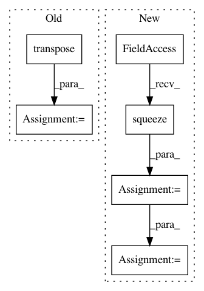

44d6b1ee73343ca7e4e9dd3ead5ec1cf8265b47c,examples/loss_and_gradient_so3.py,,grad,#Any#Any#Any#Any#,26
Before Change
* gs.outer(quat_vec, quat_vec) / quat_vec_norm ** 2
+ 2 * quat_arctan2 / quat_vec_norm * gs.eye(3))
differential[0, :, :1] = differential_scalar.transpose()
differential[0, :, 1:] = differential_vec
y_pred = SO3.rotation_vector_from_quaternion(y_pred)
y_true = SO3.rotation_vector_from_quaternion(y_true)
After Change
* (gs.einsum("ni,nj->nij", quat_vec, quat_vec)
/ quat_vec_norm ** 2)
+ 2 * quat_arctan2 / quat_vec_norm * gs.eye(3))
differential_vec = gs.squeeze(differential_vec)
differential = gs.concatenate(
[differential_scalar, differential_vec],
axis=1)
y_pred = SO3.rotation_vector_from_quaternion(y_pred)
y_true = SO3.rotation_vector_from_quaternion(y_true)
In pattern: SUPERPATTERN
Frequency: 3
Non-data size: 6
Instances
Project Name: geomstats/geomstats
Commit Name: 44d6b1ee73343ca7e4e9dd3ead5ec1cf8265b47c
Time: 2018-12-30
Author: ninamio78@gmail.com
File Name: examples/loss_and_gradient_so3.py
Class Name:
Method Name: grad
Project Name: cornellius-gp/gpytorch
Commit Name: 7abe05a7678c36077b53b5fa49f9588b90aac60f
Time: 2018-11-08
Author: balandat@fb.com
File Name: test/likelihoods/test_general_multitask_gaussian_likelihood.py
Class Name: TestMultiTaskGPRegression
Method Name: test_multitask_low_rank_noise_covar
Project Name: geomstats/geomstats
Commit Name: ef36b82652b3494753d5c6b8a974c0b978b310a0
Time: 2018-12-28
Author: ninamio78@gmail.com
File Name: examples/loss_and_gradient_so3.py
Class Name:
Method Name: grad